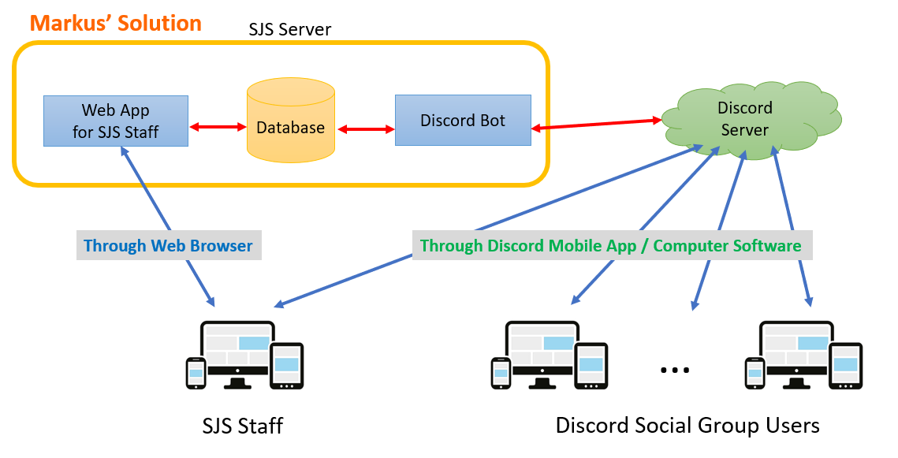

Managing Social Virtual Group Members
for Hong Kong Youth Services using a Discord Bot
Markus Lu
I am the Head Developer for the project "Managing Social Virtual Group Members for Hong Kong Youth Services using a Discord Bot". This project serves the 6PM Cyber Youth Support Team at the non-profit organization St. Jame's Settlement in Hong Kong.


1. Introduction
Severe social withdrawal, also known as Hikikomori, is defined as the condition where a youth withdraws into the home and does not participate in society for a period of over six months (Wong, 2015), and these youths are also referred to as the hidden youth. Hidden youth has become a serious societal issue in developed countries nowadays, e.g., Japan (Watts, 2002) and Korea (Lee et al., 2013). According to a study by Wong et al. (2015), around 2% of the Hong Kong population would be classified as having severe social withdrawal. The number of hidden youths in Hong Kong is expected to be 140,000 (Durston, 2019). The social distancing measures for the COVID-19 pandemic have worsened the situation.
St. Jame's Settlement is one of the non-profit organizations in Hong Kong offering government-funded social services to hidden youths. Due to the advancement in Internet technologies, many hidden youths can be found online and they are referred to as cyber youths. SJS has established a team called the 6PM Cyber Youth Support Team, which conducts youth outreach, support, and counselling through the online medium. They provide online social forums for youngsters to communicate with each other, and social workers will also hold events to regularly motivate teenagers to have a mentally and socially positive life.
One of the main online social platforms maintained by the 6PM Cyber Youth Support Team is a Social Virtual Group for invited cyber youths on the Discord platform, which contains thousands of active users. The social worker has identified and invited cyber youths from social networking sites, online forums, and case referrals to their Discord server (which is a Discord feature for forming a virtual group of members). It is a heavy task to manage a Discord server; one of the duties of the social workers at 6PM is to maintain the contacts of the server members. But direct messaging each of them for collecting and updating their contact details is tedious and time-consuming. Discord has offered programming tools for developing Discord bots to act as server users to communicate with group members. Therefore, this project aims to develop an information system with a Discord bot to help the administrator and social workers in St. Jame's Settlement manage Discord users more easily.
1.1 Project Aim and Objectives
This project aims to develop a Discord bot and a web application for managing the Discord server members at the 6PM Discord server. The following are the project objectives:
- Communicates with staff in the 6PM Cyber Youth Support Team to gain insight into the existing workflow and project goals
- Designs the membership registration system in Discord
- Develops a Discord bot for the membership information collection
- Set up a relational database for membership storage
- Design and develop the web application for managing and updating the membership information in the database
- Provides training to staff on behalf of management to enhance long-term service quality and productivity
2. Methodology and Implementations
